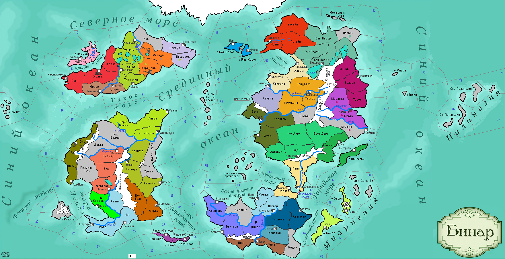

<==
| 5 |
| 6 |
| 7 |
| 8 |
| 9 |
| 10 |
| 11 |
| 12 |
| 13 |
==>
Ледяная пещера
Ладорцы, обследовав взятые под контроль земли Изарни, обнаружили там Ледяную пещеру, на много километров уходящую вглубь земли. По преданиям местных жителей, пещера - это ход, оставленный огромными ледяными червями, на заре человечества, обитавшими здесь. [Уникальный природный объект - Пещера. Не занимает слота. +0,5 о/пр в ход, +1 к б/духу]

13-й ход истории мира Бинар (1160 г.)
· Князь Беин I умер, не оставив завещания. Небольшой отряд коринтарцев высадился на архипелаге Салк-Ти, но был … съеден дикарями.
· Правительница гос-ва Муад’оги Лори-ойя выходит замуж за верховного патриция Дюрандаля Утрина I.
· В основу андуизма были положены древние предания про Бога Анду, поэтому первым шагом новой религии стала мифологизация почитаемого Божества.
· Силы Феллерда захватывают провинцию Игельрод.
· В Темпесте рабам вбивают палками раболепие, которую деспотичный князь Креуру I называет «культурной традицией» своего народа.
· Правитель Синарала Дидар Интересный умирает на чужбине. Ему наследует сын Марран. Но пожить ему долго было не суждено: во главе войска он принял удар от напавшей на Кейшию армии Белаэра. Неравная схватка осталась за противником. Марран I выжил, но следы его затерялись в степи…
· 15-ти летний князь Орнели Гамал I тонет в море при купании. Власть захватывает дядя Садок из бокового рода Садок-Орнели, т.к. других кандидатов не было.
· Князь Торуйский Воразун I Великий повелел отныне себя титуловать именно так, позавидовав тому, что «дартийского выскочку с севера почему-то так называют».
· Герцог Ферлустана Гальта I умирает от вспышки оспы.
· Священнослужители-радигисты отличались большим плюрализмом к иноверцам, считая, что уважение чуждых культов послужит добрую службу и их вере.
· Карстэд I Умный принимает власть в герцогстве Фриулес. Войска под командованием герцога захватывают столицу Форзерда, разбив осадными башнями его глиняные стены.
· Мятежники одерживают верх в сражении с войсками Кордавы. Войска не хотят проливать кровь за правителя-обжору, при том что армия и население голодают…
· Основаны новые города: Щезно (Вестервальд)